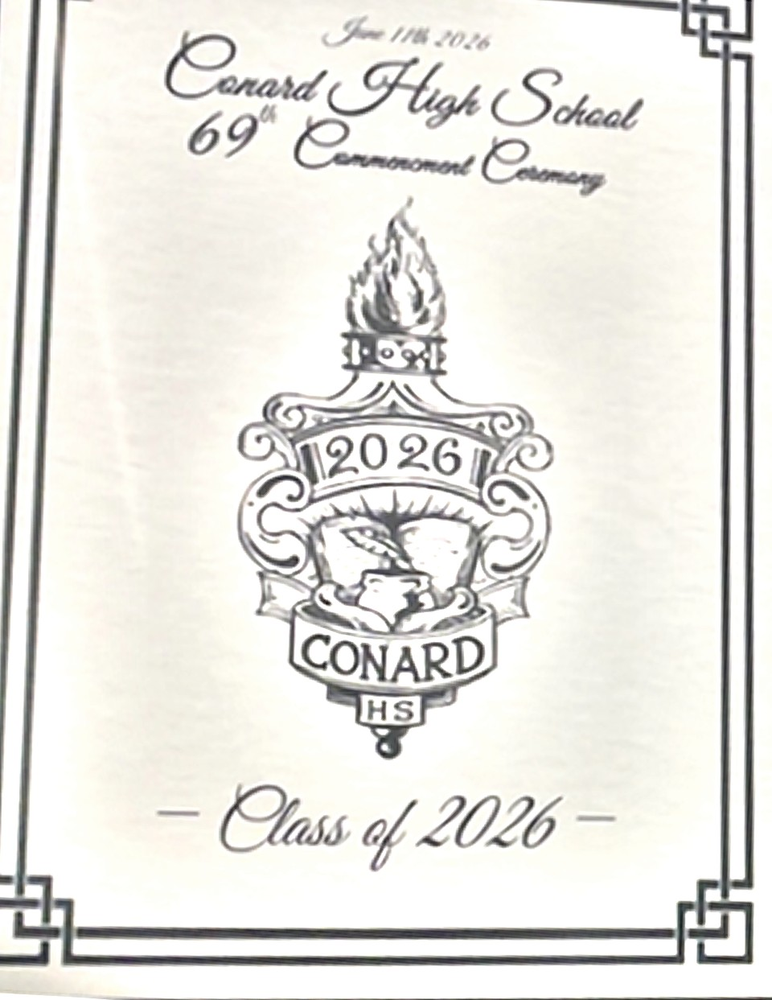
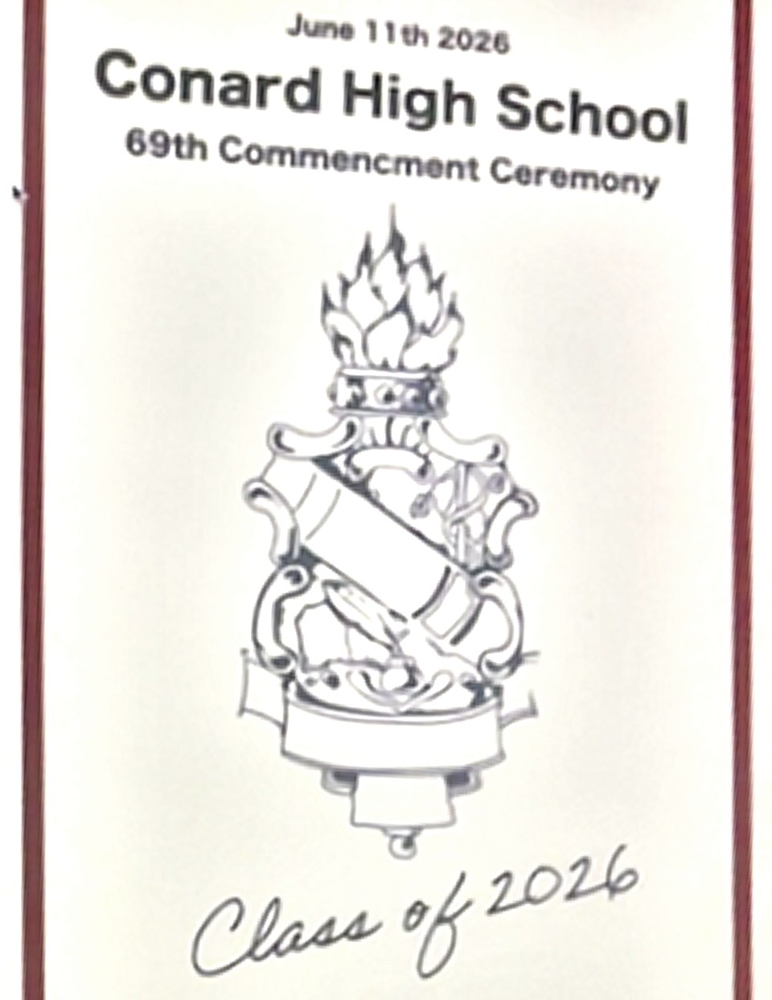

Both covers straightened from the original photographs and scaled to equal page width. The layout holds still — what moves is how much of the column each crest occupies, and where its weight comes to rest.

| Width | 0.43 × page |
| Height | 0.77 × page |
| Proportion | 1 : 1.77 |
| Widest point | 44% down |
| Gap to closing line | 3.6% page |

| Width | 0.41 × page |
| Height | 0.88 × page |
| Proportion | 1 : 2.14 |
| Widest point | 76% down |
| Gap to closing line | 0.3% page |
Within 5% of the same width, the new mark stands 15% taller. It fills the column where the old one filled a block.
The old crest is widest 44% down; the new one 76% down. The mass leaves the optical centre and settles on the base.
Clearance above the closing line falls from 3.6% of page width to 0.3%. Base and script now share one band.